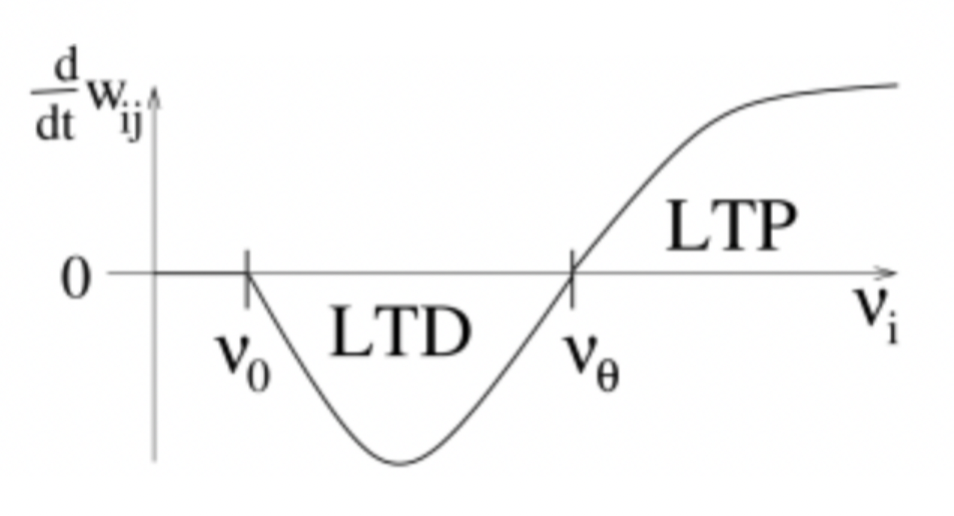

2.2 Synaptic Plasticity
We just talked about synaptic dynamics, but we haven't talked about synaptic plasticity. Next, let's see how to use BrainPy to implement synaptic plasticity.
Plasticity mainly distinguishes short-term plasticity from long-term plasticity. We will first introduce short-term plasticity (STP), and then introduce several different models of long-term synaptic plasticity (also known as learning rules).
The introduction is as follows:
short-term plasticity
long-term plasticity
Spike-timing dependent plasticity
Rate based Hebb rule
- Oja's rule
- BCM rule
2.2.1 STP
Let's first look at short-term plasticity. We will start with the results of the experiment. The figure shows the changes of the membrane potential of postsynaptic neurons as the firing of presynaptic neurons. We can see that when the presynaptic neurons repeatedly firing with short intervals, the response of the postsynaptic neurons becomes weaker and weaker, showing a short term depression. But the response recovers after a short period of time, so this plasticity is short-term.

The formula of the model is as follows. Here, the short term plasticity is described mainly by variables and . Where represents the probability of neurotransmitter release, the initial value is 0, and increase with the firing of presynaptic neurons, contributing to the short-term facilitation (STF); while represents the residual amount of neurotransmitters, the initial value is 1, and some of them will be used every time when presynaptic neurons fire, which means that it will decrease, contributing to the short-term depression (STD). Therefore the two directions of facilitation and depression occur simultaneously. and controls the recovery speed of and , respectively, and the relationship between them determines which direction of plasticity plays a dominant role.
The code implemented with BrainPy is as follows:
class STP(bp.TwoEndConn):
target_backend = 'general'
@staticmethod
def derivative(s, u, x, t, tau, tau_d, tau_f):
dsdt = -s / tau
dudt = - u / tau_f
dxdt = (1 - x) / tau_d
return dsdt, dudt, dxdt
def __init__(self, pre, post, conn, delay=0., U=0.15, tau_f=1500., tau_d=200., tau=8., **kwargs):
# parameters
self.tau_d = tau_d
self.tau_f = tau_f
self.tau = tau
self.U = U
self.delay = delay
# connections
self.conn = conn(pre.size, post.size)
self.conn_mat = conn.requires('conn_mat')
self.size = bp.ops.shape(self.conn_mat)
# variables
self.s = bp.ops.zeros(self.size)
self.x = bp.ops.ones(self.size)
self.u = bp.ops.zeros(self.size)
self.w = bp.ops.ones(self.size)
self.I_syn = self.register_constant_delay('I_syn', size=self.size, delay_time=delay)
self.integral = bp.odeint(f=self.derivative, method='exponential_euler')
super(STP, self).__init__(pre=pre, post=post, **kwargs)
def update(self, _t):
self.s, u, x = self.integral(self.s, self.u, self.x, _t, self.tau, self.tau_d, self.tau_f)
pre_spike_map = bp.ops.unsqueeze(self.pre.spike, 1) * self.conn_mat
u += self.U * (1-self.u) * pre_spike_map
self.s += self.w * u * self.x * pre_spike_map
x -= u * self.x * pre_spike_map
self.u = u
self.x = x
self.I_syn.push(self.s)
self.post.input += bp.ops.sum(self.I_syn.pull(), axis=0)
neu1 = bm.neurons.LIF(1, monitors=['V'])
neu2 = bm.neurons.LIF(1, monitors=['V'])
# STD
syn = STP(U=0.2, tau_d=150., tau_f=2., pre=neu1, post=neu2,
conn=bp.connect.All2All(), monitors=['s', 'u', 'x'])
net = bp.Network(neu1, syn, neu2)
net.run(100., inputs=(neu1, 'input', 28.))
# plot
fig, gs = bp.visualize.get_figure(2, 1, 3, 7)
fig.add_subplot(gs[0, 0])
plt.plot(net.ts, syn.mon.u[:, 0], label='u')
plt.plot(net.ts, syn.mon.x[:, 0], label='x')
plt.legend()
fig.add_subplot(gs[1, 0])
plt.plot(net.ts, syn.mon.s[:, 0], label='s')
plt.legend()
plt.xlabel('Time (ms)')
plt.show()

neu1 = bm.neurons.LIF(1, monitors=['V'])
neu2 = bm.neurons.LIF(1, monitors=['V'])
# STF
syn = STP(U=0.1, tau_d=10, tau_f=100., pre=neu1, post=neu2,
conn=bp.connect.All2All(), monitors=['s', 'u', 'x'])
net = bp.Network(neu1, syn, neu2)
net.run(100., inputs=(neu1, 'input', 28.))
# plot
fig, gs = bp.visualize.get_figure(2, 1, 3, 7)
fig.add_subplot(gs[0, 0])
plt.plot(net.ts, syn.mon.u[:, 0], label='u')
plt.plot(net.ts, syn.mon.x[:, 0], label='x')
plt.legend()
fig.add_subplot(gs[1, 0])
plt.plot(net.ts, syn.mon.s[:, 0], label='s')
plt.legend()
plt.xlabel('Time (ms)')
plt.show()

The plots show that when we set the parameters , recovers very slowly, and decays very quickly, so in the end, the transmitter is not enough to open the receptors, showing STD dominants;
When , on the contrary, every time is used, it will be added back quickly. There are always enough transmitters available. At the same time, the decay of is very slow, so the probability of releasing transmitters is getting higher and higher, showing STF dominants.
2.2.2 Long-term Plasticity
STDP
Let's start with the figure from experiments. The x-axis is the time difference between the spike of the presynaptic neuron and the postsynaptic neuron. The left part of the zero represents the spike timing of the presynaptic neuron earlier than that of the postsynaptic neuron, which shows long term potentiation (LTP); and the right side of the zero represents the postsynaptic neuron fires before the presynaptic neuron does, showing long term depression（LTD）。

The model formula is as follows, where variables and control the LTD and LTP respectively. When the presynaptic neuron fire before the postsynaptic neuron, is always 0 until the postsynaptic neuron fire, so will not change for the time being, but keep increases; when there is a spike in the postsynaptic neuron, increase with an amount of , so it is LTP, and vice verse.
Now let's see how to use BrainPy to implement this model. Here is incremental when there is a spike of the presynaptic neuron, which is the same as the previous common synapse model. So this placement can be added to the previous synapse models. Here we usually use single exponential decay to implement the dynamics of .
class STDP(bp.TwoEndConn):
target_backend = 'general'
@staticmethod
def derivative(s, A_s, A_t, t, tau, tau_s, tau_t):
dsdt = -s / tau
dAsdt = - A_s / tau_s
dAtdt = - A_t / tau_t
return dsdt, dAsdt, dAtdt
def __init__(self, pre, post, conn, delay=0.,
delta_A_s=0.5, delta_A_t=0.5, w_min=0., w_max=20.,
tau_s=10., tau_t=10., tau=10., **kwargs):
# parameters
self.tau_s = tau_s
self.tau_t = tau_t
self.tau = tau
self.delta_A_s = delta_A_s
self.delta_A_t = delta_A_t
self.w_min = w_min
self.w_max = w_max
self.delay = delay
# connections
self.conn = conn(pre.size, post.size)
self.conn_mat = conn.requires('conn_mat')
self.size = bp.ops.shape(self.conn_mat)
# variables
self.s = bp.ops.zeros(self.size)
self.A_s = bp.ops.zeros(self.size)
self.A_t = bp.ops.zeros(self.size)
self.w = bp.ops.ones(self.size) * 1.
self.I_syn = self.register_constant_delay('I_syn', size=self.size, delay_time=delay)
self.integral = bp.odeint(f=self.derivative, method='exponential_euler')
super(STDP, self).__init__(pre=pre, post=post, **kwargs)
def update(self, _t):
s, A_s, A_t = self.integral(self.s, self.A_s, self.A_t,
_t, self.tau, self.tau_s, self.tau_t)
w = self.w
pre_spike_map = bp.ops.unsqueeze(self.pre.spike, 1) * self.conn_mat
s += w * pre_spike_map
A_s += self.delta_A_s * pre_spike_map
w -= A_t * pre_spike_map
post_spike_map = bp.ops.unsqueeze(self.post.spike, 0) * self.conn_mat
A_t += self.delta_A_t * post_spike_map
w += A_s * post_spike_map
self.A_s = A_s
self.A_t = A_t
self.w = bp.ops.clip(w, self.w_min, self.w_max)
self.s = s
self.I_syn.push(self.s)
self.post.input += bp.ops.sum(self.I_syn.pull(), axis=0)
pre = bm.neurons.LIF(1, monitors=['spike'])
post = bm.neurons.LIF(1, monitors=['spike'])
# pre before post
duration = 60.
(I_pre, _) = bp.inputs.constant_current([(0, 5), (30, 15),
(0, 5), (30, 15),
(0, duration-40)])
(I_post, _) = bp.inputs.constant_current([(0, 7), (30, 15),
(0, 5), (30, 15),
(0, duration-7-35)])
syn = STDP(pre=pre, post=post, conn=bp.connect.All2All(), monitors=['s', 'A_s', 'A_t', 'w'])
net = bp.Network(pre, syn, post)
net.run(duration, inputs=[(pre, 'input', I_pre), (post, 'input', I_post)])
# plot
fig, gs = bp.visualize.get_figure(3, 1)
fig.add_subplot(gs[0, 0])
plt.plot(net.ts, syn.mon.w[:, 0], label='w')
plt.legend()
fig.add_subplot(gs[2, 0])
plt.plot(net.ts, 2*pre.mon.spike[:, 0], label='pre_spike')
plt.plot(net.ts, 2*post.mon.spike[:, 0], label='post_spike')
plt.legend()
fig.add_subplot(gs[1, 0])
plt.plot(net.ts, syn.mon.s[:, 0], label='s')
plt.legend()
plt.xlabel('Time (ms)')
plt.show()

As we expected, weights increase when the presynaptic neuron fire before the postsynaptic neuron.
pre = bm.neurons.LIF(1, monitors=['spike'])
post = bm.neurons.LIF(1, monitors=['spike'])
# post before pre
duration = 60.
(I_post, _) = bp.inputs.constant_current([(0, 5), (30, 15),
(0, 5), (30, 15),
(0, duration-40)])
(I_pre, _) = bp.inputs.constant_current([(0, 7), (30, 15),
(0, 5), (30, 15),
(0, duration-7-35)])
syn = STDP(pre=pre, post=post, conn=bp.connect.All2All(), monitors=['s', 'A_s', 'A_t', 'w'])
net = bp.Network(pre, syn, post)
net.run(duration, inputs=[(pre, 'input', I_pre), (post, 'input', I_post)])
# plot
fig, gs = bp.visualize.get_figure(3, 1)
fig.add_subplot(gs[0, 0])
plt.plot(net.ts, syn.mon.w[:, 0], label='w')
plt.legend()
fig.add_subplot(gs[2, 0])
plt.plot(net.ts, 2*pre.mon.spike[:, 0], label='pre_spike')
plt.plot(net.ts, 2*post.mon.spike[:, 0], label='post_spike')
plt.legend()
fig.add_subplot(gs[1, 0])
plt.plot(net.ts, syn.mon.s[:, 0], label='s')
plt.legend()
plt.xlabel('Time (ms)')
plt.show()

As we expected, weights decrease when the postsynaptic neuron fire before the presynaptic neuron.
Oja's rule
Next, let's look at the rate model based on Hebbian learning. Because Hebbian learning is "fire together, wire together", regardless of the order before and after, spiking time can be ignored, so it can be simplified as a rate-based model. Let's first look at the general form of Hebbian learning. For the to connection as shown in the figure, denotes the firing rate of pre- and post-neuron groups, respectively. According to the locality characteristic of Hebbian learning, The change of is affected by itself and , we get the following differential equation.
The following formula is obtained by Taylor expansion on the right side of the above formula.
The 6th term contains ，only if is not zero can the "fire together" of Hebbian learning be satisfied. For example, the formula of Oja's rule is as follows, which corresponds to 5th and 6th terms of the above formula.
Now let's see how to use BrainPy to implement Oja's rule.
class Oja(bp.TwoEndConn):
target_backend = 'general'
@staticmethod
def derivative(w, t, gamma, r_pre, r_post):
dwdt = gamma * (r_post * r_pre - r_post * r_post * w)
return dwdt
def __init__(self, pre, post, conn, delay=0.,
gamma=0.005, w_max=1., w_min=0.,
**kwargs):
# params
self.gamma = gamma
self.w_max = w_max
self.w_min = w_min
# no delay in firing rate models
# conns
self.conn = conn(pre.size, post.size)
self.conn_mat = conn.requires('conn_mat')
self.size = bp.ops.shape(self.conn_mat)
# data
self.w = bp.ops.ones(self.size) * 0.05
self.integral = bp.odeint(f=self.derivative)
super(Oja, self).__init__(pre=pre, post=post, **kwargs)
def update(self, _t):
w = self.conn_mat * self.w
self.post.r = bp.ops.sum(w.T * self.pre.r, axis=1)
# resize to matrix
dim = self.size
r_post = bp.ops.vstack((self.post.r,) * dim[0])
r_pre = bp.ops.vstack((self.pre.r,) * dim[1]).T
self.w = self.integral(w, _t, self.gamma, r_pre, r_post)
We aim to implement the connection as shown in the figure. The purple neuron group receives inputs from the blue and red neuron groups. The external input to the post group is exactly the same as the red one, while the blue one is the same at first, but not later.

Since Oja's rule is a rate-based model, we need a rate-based neuron model to see this learning rule of two groups of neurons.
class neu(bp.NeuGroup):
target_backend = 'general'
@staticmethod
def integral(r, t, I, tau):
dr = -r / tau + I
return dr
def __init__(self, size, tau=10., **kwargs):
self.tau = tau
self.r = bp.ops.zeros(size)
self.input = bp.ops.zeros(size)
self.g = bp.odeint(self.integral)
super(neu, self).__init__(size=size, **kwargs)
def update(self, _t):
self.r = self.g(self.r, _t, self.input, self.tau)
self.input[:] = 0
# set params
neu_pre_num = 2
neu_post_num = 2
dt = 0.02
bp.backend.set('numpy', dt=dt)
# build network
neu_pre = neu(neu_pre_num, monitors=['r'])
neu_post = neu(neu_post_num, monitors=['r'])
syn = Oja(pre=neu_pre, post=neu_post,
conn=bp.connect.All2All(), monitors=['w'])
net = bp.Network(neu_pre, syn, neu_post)
# create input
current_mat_in = []
current_mat_out = []
current1, _ = bp.inputs.constant_current(
[(2., 20.), (0., 20.)] * 3 + [(0., 20.), (0., 20.)] * 2)
current2, _ = bp.inputs.constant_current([(2., 20.), (0., 20.)] * 5)
current3, _ = bp.inputs.constant_current([(2., 20.), (0., 20.)] * 5)
current_mat_in = np.vstack((current1, current2))
current_mat_out = current3
current_mat_out = np.vstack((current_mat_out, current3))
# simulate network
net.run(duration=200.,
inputs=[(neu_pre, 'r', current_mat_in.T, '='),
(neu_post, 'r', current_mat_out.T)])
# paint
fig, gs = bp.visualize.get_figure(4, 1, 3, 12)
fig.add_subplot(gs[0, 0])
plt.plot(net.ts, neu_pre.mon.r[:, 0], 'b', label='pre r1')
plt.legend()
fig.add_subplot(gs[1, 0])
plt.plot(net.ts, neu_pre.mon.r[:, 1], 'r', label='pre r2')
plt.legend()
fig.add_subplot(gs[2, 0])
plt.plot(net.ts, neu_post.mon.r[:, 0], color='purple', label='post r')
plt.ylim([0, 4])
plt.legend()
fig.add_subplot(gs[3, 0])
plt.plot(net.ts, syn.mon.w[:, 0, 0], 'b', label='syn.w1')
plt.plot(net.ts, syn.mon.w[:, 1, 0], 'r', label='syn.w2')
plt.legend()
plt.show()

It can be seen from the results that at the beginning, when the two groups of neurons were given input at the same time, their weights increased simultaneously, and the response of post became stronger and stronger, showing LTP. After 100ms, the blue group is no longer fire together, only the red group still fire together, and only the weights of the red group are increased. The results accord with the "fire together, wire together" of Hebbian learning.
BCM rule
The formula of the BCM rule is as follows.
The right side of the formula is plotted as shown in the figure below. When the firing rate is greater than the threshold, there is LTP, and when the firing rate is lower than the threshold, there is LTD. Therefore, the selectivity can be achieved by adjusting the threshold.

Here we implement the same connections as the previous Oja's rule, except that the two groups of neurons are alternately firing. Among them, the blue group is always stronger than the red one. We dynamically adjust the threshold by setting it as the time average of , that is . The code implemented by BrainPy is as follows: the threshold is updating in the update function.
class BCM(bp.TwoEndConn):
target_backend = 'general'
@staticmethod
def derivative(w, t, lr, r_pre, r_post, r_th):
dwdt = lr * r_post * (r_post - r_th) * r_pre
return dwdt
def __init__(self, pre, post, conn, lr=0.005, w_max=2., w_min=0., **kwargs):
# parameters
self.lr = lr
self.w_max = w_max
self.w_min = w_min
self.dt = bp.backend._dt
# connections
self.conn = conn(pre.size, post.size)
self.conn_mat = conn.requires('conn_mat')
self.size = bp.ops.shape(self.conn_mat)
# variables
self.w = bp.ops.ones(self.size)
self.sum_post_r = bp.ops.zeros(post.size[0])
self.int_w = bp.odeint(f=self.derivative, method='rk4')
super(BCM, self).__init__(pre=pre, post=post, **kwargs)
def update(self, _t):
# update threshold
self.sum_post_r += self.post.r
r_th = self.sum_post_r / (_t / self.dt + 1)
# resize to matrix
w = self.w * self.conn_mat
dim = self.size
r_th = bp.ops.vstack((r_th,) * dim[0])
r_post = bp.ops.vstack((self.post.r,) * dim[0])
r_pre = bp.ops.vstack((self.pre.r,) * dim[1]).T
# update w
w = self.int_w(w, _t, self.lr, r_pre, r_post, r_th)
self.w = bp.ops.clip(w, self.w_min, self.w_max)
# output
self.post.r = bp.ops.sum(w.T * self.pre.r, axis=1)
w_max = 2.
n_post = 1
n_pre = 20
# group selection
group1, duration = bp.inputs.constant_current(([1.5, 1], [0, 1]) * 20)
group2, duration = bp.inputs.constant_current(([0, 1], [1., 1]) * 20)
group1 = bp.ops.vstack((
(group1,)*10))
group2 = bp.ops.vstack((
(group2,)*10
))
input_r = bp.ops.vstack((group1, group2))
pre = neu(n_pre, monitors=['r'])
post = neu(n_post, monitors=['r'])
bcm = BCM(pre=pre, post=post,conn=bp.connect.All2All(),
monitors=['w'])
net = bp.Network(pre, bcm, post)
net.run(duration, inputs=(pre, 'r', input_r.T, "="))
w1 = bp.ops.mean(bcm.mon.w[:, :10, 0], 1)
w2 = bp.ops.mean(bcm.mon.w[:, 10:, 0], 1)
r1 = bp.ops.mean(pre.mon.r[:, :10], 1)
r2 = bp.ops.mean(pre.mon.r[:, 10:], 1)
post_r = bp.ops.mean(post.mon.r[:, :], 1)
fig, gs = bp.visualize.get_figure(2, 1, 3, 12)
fig.add_subplot(gs[1, 0], xlim=(0, duration), ylim=(0, w_max))
plt.plot(net.ts, w1, 'b', label='w1')
plt.plot(net.ts, w2, 'r', label='w2')
plt.title("weights")
plt.ylabel("weights")
plt.xlabel("t")
plt.legend()
fig.add_subplot(gs[0, 0], xlim=(0, duration))
plt.plot(net.ts, r1, 'b', label='r1')
plt.plot(net.ts, r2, 'r', label='r2')
plt.title("inputs")
plt.ylabel("firing rate")
plt.xlabel("t")
plt.legend()
plt.show()

The results show that the blue group with stronger input demonstrating LTP, while the red group with weaker input showing LTD, so the blue group is being chosen.